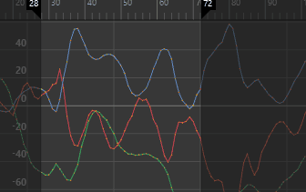
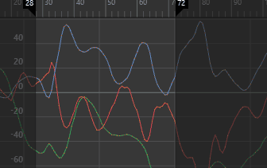

- 在“曲线图编辑器”(Graph Editor)的“曲线”(Curves)菜单中，选择“简化曲线”(Simplify Curve) >

注：
若要还原过滤器默认设置，请单击“过滤器”(Filter)窗口中的。
- 时间范围(Time Range)
-
指定简化曲线的时间范围。
- 全部(All)
-
简化整个时间范围的曲线。
- 时间滑块(Time Slider)
-
简化由时间滑块的“播放开始”(Playback Start)和“播放结束”(Playback End)时间定义的时间范围内的曲线。
- 开始(Start)/结束(End)
-
指定的时间范围（开始时间/结束时间）内的所有关键帧均会简化。

- 开始时间(Start Time)
-
指定时间范围的开始。仅当启用“开始/结束”(Start/End)时，该选项才可用。
- 结束时间(End Time)
-
指定时间范围的结束。仅当启用“开始/结束”(Start/End)时，该选项才可用。
- 简化方法(Simplify Method)
-
设定下列选项之一：
- 经典(Classic)
-
使用 Maya 先前版本中的算法移除超量的关键帧。如果灯光数据集（例如，关键帧动画）的每一帧中并没有关键帧，请使用该方法。
- 稠密数据(Dense Data)
-
使用专为每个帧中均具有关键帧的稠密数据集（例如，运动捕捉数据）设计的算法移除超量的关键帧。如果“经典”(Classic)方法无法提供所需的结果，则该方法还可助您一臂之力。
- 时间容差(Time Tolerance)
-
选定曲线简化之后，关键帧的计时数量（以秒为单位）将会平均化。“时间容差”(Time Tolerance)越大，关键帧越稀疏，且结果曲线与原始曲线越不相似。“时间容差”(Time Tolerance)的默认值为 0.05。
- 值容差(Value Tolerance)
-
选定曲线简化之后，关键帧值的数量（以当前工作单位表示）将会平均化。“值容差”(Value Tolerance)的默认值为 0.01。